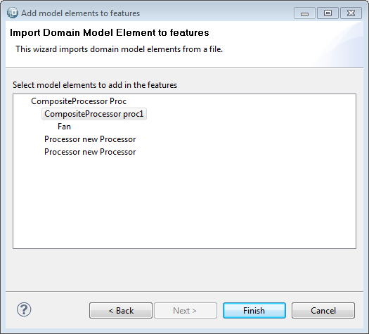

You can use two different ways to add Domain Model Element into feature. However, in many cases we prefer add Domain Model Elements by Drag and Drop.
A first step before adding Domain Model Elements by Drag and Drop into Feature model is adding Domain model in the session. We suppose to have the following flow model called system.flow in our featureModel project.

To add this model into the session, right click on mySession.aird -> Add Model. Check Add existing resource and click on Finish. Then click on Browse Workspace and search session.flow in the featureModel project.
Your Eclipse seems to be like in the following figure :

To add a Domain Model Element on a given feature (here adding Composite Processor proc1 on feature b), simply click on Composite Processor proc1 and drag it into feature b. You obtain the following figure :

Domain model elements are directly referenced by the features. So, to add Domain model element on a feature, simply right click on the Feature -> Add Domain Model Element -> Add Domain Model Element. A wizard appears. Click on load button to select a domain model element model. The next wizard page permits to select the desired Domain Model elements and add it into the feature.
At the moment, the editor display the metaclass' name of the added object.
The following wizard permits to select any model file based on EMF by clicking on Load and search the file.
Then a second wizard page permits to select a domain model element.

So, the composite processor and the Fan are added directly on the feature.
You obtain the same as the last figure of the section 3.3.1.